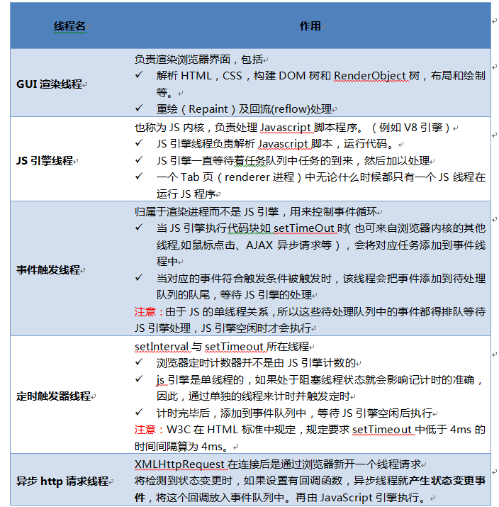
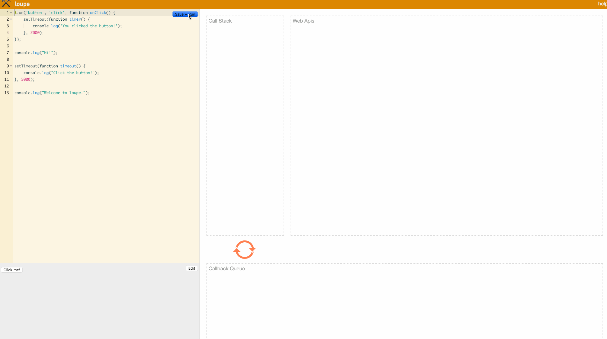
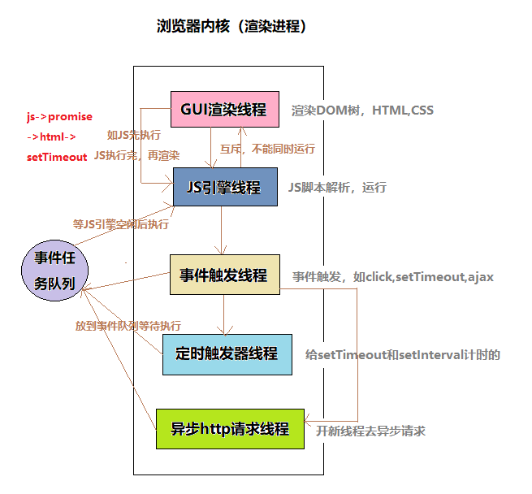

<!DOCTYPE html><html class="theme-next mist" lang="zh-Hans"><head><meta name="generator" content="Hexo 3.9.0"><meta charset="UTF-8"><meta name="baidu-site-verification" content="dil57BBbBc"><meta http-equiv="X-UA-Compatible" content="IE=edge"><meta name="viewport" content="width=device-width,initial-scale=1,maximum-scale=1"><meta name="theme-color" content="#222"><link rel="manifest" href="/manifest.json"><link rel="stylesheet" media="all" href="/lib/Han/dist/han.min.css?v=3.3"><meta http-equiv="Cache-Control" content="no-transform"><meta http-equiv="Cache-Control" content="no-siteapp"><meta name="google-site-verification" content="YH32omENY7b_BdEuIWv46jSBK-0Vyw_dWbJTGNBblT0"><link href="https://cdn.jsdelivr.net/gh/tonsky/FiraCode@1.206/distr/fira_code.css" rel="stylesheet" type="text/css"><link href="https://cdnjs.cloudflare.com/ajax/libs/font-awesome/4.7.0/css/font-awesome.min.css" rel="stylesheet" type="text/css"><link href="/css/main.css?v=5.1.4" rel="stylesheet" type="text/css"><link rel="apple-touch-icon" sizes="180x180" href="/images/favicon.ico?v=5.1.4"><link rel="icon" type="image/png" sizes="32x32" href="/images/favicon.ico?v=5.1.4"><link rel="icon" type="image/png" sizes="16x16" href="/images/favicon.ico?v=5.1.4"><link rel="icon" type="image/png" sizes="16x16" href="/images/favicon.ico?v=5.1.4"><link rel="icon" type="image/png" sizes="16x16" href="/images/favicon.ico?v=5.1.4"><link rel="icon" type="image/png" sizes="16x16" href="/images/favicon.ico?v=5.1.4"><meta name="keywords" content="异步,事件循环,任务队列,回调,"><meta name="description" content="唯一比不知道代码为什么崩溃更可怕的事情是，不知道为什么一开始它是工作的！在 ECMA 规范的最近几次版本里不断有新成员加入，尤其在处理异步的问题上，更是不断推陈出新。然而，我们在享受便利的同时，也应该了解异步到底是怎么一回事。现在与将来JavaScript 是单线程的，一次只能专注于一件事。如果浏览器只靠 JavaScript 引擎线程来完成所有工作，先不说能不能搞定，即使可以，那也会花费很长时间"><meta name="keywords" content="异步,事件循环,任务队列,回调"><meta property="og:type" content="article"><meta property="og:title" content="异步的JavaScript(回调篇)"><meta property="og:url" content="https://yexiaochen.github.io/异步的JavaScript/index.html"><meta property="og:site_name" content="贪空"><meta property="og:description" content="唯一比不知道代码为什么崩溃更可怕的事情是，不知道为什么一开始它是工作的！在 ECMA 规范的最近几次版本里不断有新成员加入，尤其在处理异步的问题上，更是不断推陈出新。然而，我们在享受便利的同时，也应该了解异步到底是怎么一回事。现在与将来JavaScript 是单线程的，一次只能专注于一件事。如果浏览器只靠 JavaScript 引擎线程来完成所有工作，先不说能不能搞定，即使可以，那也会花费很长时间"><meta property="og:locale" content="zh-Hans"><meta property="og:image" content="https://yexiaochen.github.io/images/thread.png"><meta property="og:image" content="https://yexiaochen.github.io/images/EventLoop.gif"><meta property="og:image" content="https://yexiaochen.github.io/images/render.png"><meta property="og:image" content="https://yexiaochen.github.io/images/callbackHell.jpg"><meta property="og:updated_time" content="2019-03-10T05:14:36.295Z"><meta name="twitter:card" content="summary"><meta name="twitter:title" content="异步的JavaScript(回调篇)"><meta name="twitter:description" content="唯一比不知道代码为什么崩溃更可怕的事情是，不知道为什么一开始它是工作的！在 ECMA 规范的最近几次版本里不断有新成员加入，尤其在处理异步的问题上，更是不断推陈出新。然而，我们在享受便利的同时，也应该了解异步到底是怎么一回事。现在与将来JavaScript 是单线程的，一次只能专注于一件事。如果浏览器只靠 JavaScript 引擎线程来完成所有工作，先不说能不能搞定，即使可以，那也会花费很长时间"><meta name="twitter:image" content="https://yexiaochen.github.io/images/thread.png"><script type="text/javascript" id="hexo.configurations">var NexT=window.NexT||{},CONFIG={root:"/",scheme:"Mist",version:"5.1.4",sidebar:{position:"left",display:"hide",offset:12,b2t:!1,scrollpercent:!1,onmobile:!0},fancybox:!1,tabs:!0,motion:{enable:!1,async:!1,transition:{post_block:"fadeIn",post_header:"slideDownIn",post_body:"slideDownIn",coll_header:"slideLeftIn",sidebar:"slideUpIn"}},duoshuo:{userId:"0",author:"博主"},algolia:{applicationID:"",apiKey:"",indexName:"",hits:{per_page:10},labels:{input_placeholder:"Search for Posts",hits_empty:"We didn't find any results for the search: ${query}",hits_stats:"${hits} results found in ${time} ms"}}}</script><link rel="canonical" href="https://yexiaochen.github.io/异步的JavaScript/"><title>异步的JavaScript(回调篇) | 贪空</title><script type="text/javascript">var _hmt=_hmt||[];!function(){var e=document.createElement("script");e.src="https://hm.baidu.com/hm.js?ad8db08f31eca01d048b60d4299de095";var t=document.getElementsByTagName("script")[0];t.parentNode.insertBefore(e,t)}()</script></head><body itemscope itemtype="http://schema.org/WebPage" lang="zh-Hans"><div class="container sidebar-position-left page-post-detail"><div class="headband"></div><header id="header" class="header" itemscope itemtype="http://schema.org/WPHeader"><div class="header-inner"><div class="site-brand-wrapper"><div class="site-meta"><div class="custom-logo-site-title"><a href="/" class="brand" rel="start"><span class="logo-line-before"><i></i></span> <span class="site-title">贪空</span> <span class="logo-line-after"><i></i></span></a></div><h1 class="site-subtitle" itemprop="description">贪空 Blog</h1></div><div class="site-nav-toggle"><button><span class="btn-bar"></span> <span class="btn-bar"></span> <span class="btn-bar"></span></button></div></div><nav class="site-nav"><ul id="menu" class="menu"><li class="menu-item menu-item-home"><a href="/" rel="section"><i class="menu-item-icon fa fa-fw fa-home"></i><br>首页</a></li><li class="menu-item menu-item-tags"><a href="/tags/" rel="section"><i class="menu-item-icon fa fa-fw fa-tags"></i><br>标签</a></li><li class="menu-item menu-item-categories"><a href="/categories/" rel="section"><i class="menu-item-icon fa fa-fw fa-th"></i><br>分类</a></li><li class="menu-item menu-item-archives"><a href="/archives/" rel="section"><i class="menu-item-icon fa fa-fw fa-archive"></i><br>归档</a></li></ul></nav></div></header><main id="main" class="main"><div class="main-inner"><div class="content-wrap"><div id="content" class="content"><div id="posts" class="posts-expand"><article class="post post-type-normal" itemscope itemtype="http://schema.org/Article"><div class="post-block"><link itemprop="mainEntityOfPage" href="https://yexiaochen.github.io/异步的JavaScript/"><span hidden itemprop="author" itemscope itemtype="http://schema.org/Person"><meta itemprop="name" content="贪空"><meta itemprop="description" content><meta itemprop="image" content="/images/avatar.jpeg"></span><span hidden itemprop="publisher" itemscope itemtype="http://schema.org/Organization"><meta itemprop="name" content="贪空"></span><header class="post-header"><h2 class="post-title" itemprop="name headline">异步的JavaScript(回调篇)</h2><div class="post-meta"><span class="post-time"><span class="post-meta-item-icon"><i class="fa fa-calendar-o"></i> </span><span class="post-meta-item-text">发表于</span> <time title="创建于" itemprop="dateCreated datePublished" datetime="2019-02-16T23:13:26+08:00">2019-02-16 </time><span class="post-meta-divider">|</span> <span class="post-meta-item-icon"><i class="fa fa-calendar-check-o"></i> </span><span class="post-meta-item-text">更新于&#58;</span> <time title="更新于" itemprop="dateModified" datetime="2019-03-10T13:14:36+08:00">2019-03-10 </time></span><span class="post-category"><span class="post-meta-divider">|</span> <span class="post-meta-item-icon"><i class="fa fa-folder-o"></i> </span><span class="post-meta-item-text">分类于</span> <span itemprop="about" itemscope itemtype="http://schema.org/Thing"><a href="/categories/很难么/" itemprop="url" rel="index"><span itemprop="name">很难么</span></a></span></span><div class="post-wordcount"><span class="post-meta-item-icon"><i class="fa fa-file-word-o"></i> </span><span class="post-meta-item-text">字数统计&#58;</span> <span title="字数统计">1,677 字 </span><span class="post-meta-divider">|</span> <span class="post-meta-item-icon"><i class="fa fa-clock-o"></i> </span><span class="post-meta-item-text">阅读时长 &asymp;</span> <span title="阅读时长">6 分钟</span></div></div></header><div class="post-body han-init-context" itemprop="articleBody"><blockquote><p>唯一比不知道代码为什么崩溃更可怕的事情是，不知道为什么一开始它是工作的！</p></blockquote><p>在 ECMA 规范的最近几次版本里不断有新成员加入，尤其在处理异步的问题上，更是不断推陈出新。然而，我们在享受便利的同时，也应该了解异步到底是怎么一回事。</p><h2 id="现在与将来"><a href="#现在与将来" class="headerlink" title="现在与将来"></a>现在与将来</h2><p>JavaScript 是单线程的，一次只能专注于一件事。如果浏览器只靠 JavaScript 引擎线程来完成所有工作，先不说能不能搞定，即使可以，那也会花费很长时间。幸好在浏览器里 JavaScript 引擎并不孤单，还有 GUI 渲染线程、事件触发线程、定时触发器线程、异步http请求线程等其它线程。这些线程之间的协作才有了我们看到的浏览器界面效果（远不止这些）。</p><p>(盗了一张图)<br></p><p>一个程序在执行过程中可能会有等待用户输入、从数据库或文件系统中请求数据、通过网络发送并等待响应，或是以固定时间间隔执行重复任务（比如动画）等情况。（这些情况，当下是无法得出结果的，但是一旦有了结果，我们知道需要去做些什么。）</p><p>JavaScript 引擎不是一个人在战斗，它把以上的任务交给其它线程，并计划好任务完成后要做的事，JavaScript 引擎又可以继续做自己的事了。从这里可以看出，一个程序的运行包括两部分，现在运行和将来运行。<strong>而现在运行和将来运行的关系正是异步编程的核心。</strong></p><figure class="highlight javascript"><table><tr><td class="gutter"><pre><span class="line">1</span><br><span class="line">2</span><br><span class="line">3</span><br></pre></td><td class="code"><pre><span class="line"><span class="keyword">let</span> params = &#123;<span class="attr">type</span>:<span class="string">'asynchronous'</span>&#125;</span><br><span class="line"><span class="keyword">let</span> response = ajax(params,<span class="string">'http://someURL.com'</span>); <span class="comment">// 异步请求</span></span><br><span class="line"><span class="keyword">if</span> (!response) <span class="keyword">throw</span> <span class="string">'无数据！'</span>;</span><br></pre></td></tr></table></figure><p>以上代码肯定会抛错的，异步请求任务交出去之后，程序会继续运行下去。由于ajax(…) 是异步操作，即使立刻返回结果，当下的 response 也不会被赋值。一个是现在，一个是将来，两者本就不属于一个时空的。</p><h2 id="事件循环"><a href="#事件循环" class="headerlink" title="事件循环"></a>事件循环</h2><p>现在和将来是相对的，等将来的时刻到了，将来也就成为了现在。<br>JavaScript 引擎运行在宿主环境中，宿主环境提供了一种机制来处理程序中多个块的执行，且执行每个块时调用 JavaScript 引擎，这种机制被称为<a href="https://developer.mozilla.org/zh-CN/docs/Web/JavaScript/EventLoop" rel="external nofollow noopener noreferrer" target="_blank">事件循环</a>。即，JavaScript 引擎本身并没有时间的概念，只是一个按需执行 JavaScript 任意代码片段的环境。<br>“事件”（JavaScript 代码执行）调度总是由包含它的环境进行。</p><p><strong>点击图片进入或<a href="http://latentflip.com/loupe" rel="external nofollow noopener noreferrer" target="_blank">点此进入</a>：</strong><br><a href="http://latentflip.com/loupe" rel="external nofollow noopener noreferrer" target="_blank"></a></p><p>一个 JavaScript 运行时包含了一个待处理的消息队列。每一个消息都关联着一个用以处理这个消息的函数。<br>在事件循环期间的某个时刻，运行时从最先进入队列的消息开始处理队列中的消息。为此，这个消息会被移出队列，并作为输入参数调用与之关联的函数。</p><figure class="highlight javascript"><table><tr><td class="gutter"><pre><span class="line">1</span><br><span class="line">2</span><br><span class="line">3</span><br></pre></td><td class="code"><pre><span class="line"><span class="keyword">while</span> (queue.waitForMessage()) &#123;</span><br><span class="line">    queue.processNextMessage();</span><br><span class="line">&#125;</span><br></pre></td></tr></table></figure><p>一旦有事件需要进行，事件循环就会运行，直到队列清空。事件循环的每一轮称为一个 tick。用户交互，IO 和定时器会向事件队列中加入事件。</p><p>(又盗了一张图)<br></p><h2 id="任务队列"><a href="#任务队列" class="headerlink" title="任务队列"></a>任务队列</h2><p>任务队列（job queue）建立在事件循环队列之上。（Promise 的异步特性就是基于任务。）<br>最好的理解方式，它是挂在事件循环队列的每个tick之后的一个队列。在事件循环的每个tick中，可能出现的异步动作不会导致一个完整的新事件添加到事件循环队列中，而会在当前 tick 的任务队列末尾添加一个项目（一个任务）。<br>即，由 Call Stack 生成的任务队列会紧随其后运行。</p><figure class="highlight javascript"><table><tr><td class="gutter"><pre><span class="line">1</span><br><span class="line">2</span><br><span class="line">3</span><br><span class="line">4</span><br><span class="line">5</span><br><span class="line">6</span><br><span class="line">7</span><br><span class="line">8</span><br><span class="line">9</span><br><span class="line">10</span><br><span class="line">11</span><br><span class="line">12</span><br><span class="line">13</span><br><span class="line">14</span><br><span class="line">15</span><br><span class="line">16</span><br><span class="line">17</span><br><span class="line">18</span><br><span class="line">19</span><br><span class="line">20</span><br><span class="line">21</span><br><span class="line">22</span><br><span class="line">23</span><br><span class="line">24</span><br><span class="line">25</span><br><span class="line">26</span><br><span class="line">27</span><br><span class="line">28</span><br><span class="line">29</span><br></pre></td><td class="code"><pre><span class="line"><span class="built_in">Promise</span>.resolve().then(<span class="function"><span class="keyword">function</span> <span class="title">promise1</span> (<span class="params"></span>) </span>&#123;</span><br><span class="line">   <span class="built_in">console</span>.log(<span class="string">'promise1'</span>);</span><br><span class="line">&#125;)</span><br><span class="line">setTimeout(<span class="function"><span class="keyword">function</span> <span class="title">setTimeout1</span> (<span class="params"></span>)</span>&#123;</span><br><span class="line">    <span class="built_in">console</span>.log(<span class="string">'setTimeout1'</span>);</span><br><span class="line">    <span class="built_in">Promise</span>.resolve().then(<span class="function"><span class="keyword">function</span>  <span class="title">promise2</span> (<span class="params"></span>) </span>&#123;</span><br><span class="line">    <span class="built_in">console</span>.log(<span class="string">'promise2'</span>);</span><br><span class="line">    &#125;)</span><br><span class="line">&#125;, <span class="number">0</span>)</span><br><span class="line"></span><br><span class="line">setTimeout(<span class="function"><span class="keyword">function</span> <span class="title">setTimeout2</span> (<span class="params"></span>)</span>&#123;</span><br><span class="line"><span class="built_in">console</span>.log(<span class="string">'setTimeout2'</span>);</span><br><span class="line">    <span class="built_in">Promise</span>.resolve().then(<span class="function"><span class="keyword">function</span>  <span class="title">promise3</span> (<span class="params"></span>) </span>&#123;</span><br><span class="line">        <span class="built_in">console</span>.log(<span class="string">'promise3'</span>);</span><br><span class="line">        setTimeout(<span class="function"><span class="keyword">function</span> <span class="title">setTimeout3</span> (<span class="params"></span>) </span>&#123;</span><br><span class="line">            <span class="built_in">console</span>.log(<span class="string">'setTimeout3'</span>);</span><br><span class="line">        &#125;)</span><br><span class="line">        <span class="built_in">Promise</span>.resolve().then(<span class="function"><span class="keyword">function</span> <span class="title">promise4</span> (<span class="params"></span>) </span>&#123;</span><br><span class="line">            <span class="built_in">console</span>.log(<span class="string">'promise4'</span>);</span><br><span class="line">        &#125;)</span><br><span class="line">    &#125;)</span><br><span class="line">&#125;, <span class="number">0</span>)</span><br><span class="line"><span class="comment">// promise1</span></span><br><span class="line"><span class="comment">// setTimeout1</span></span><br><span class="line"><span class="comment">// promise2</span></span><br><span class="line"><span class="comment">// setTimeout2</span></span><br><span class="line"><span class="comment">// promise3</span></span><br><span class="line"><span class="comment">// promise4</span></span><br><span class="line"><span class="comment">// setTimeout3</span></span><br></pre></td></tr></table></figure><h2 id="回调"><a href="#回调" class="headerlink" title="回调"></a>回调</h2><p>被作为实参传入另一函数，并在该外部函数内被调用，用以来完成某些任务的函数，称为<a href="https://developer.mozilla.org/zh-CN/docs/Glossary/Callback_function" rel="external nofollow noopener noreferrer" target="_blank">回调函数</a>。回调函数经常被用于继续执行一个异步完成后的操作，它们被称为异步回调。立即执行的称之为同步回调。<br>回调函数是事件循环“回头调用”到程序中的目标，队列处理到这个项目的时候会运行它。<br>回调是 JavaScript 语言中最基础的异步模式。<br>生活中，我们喜欢和有条理的人打交道，因为我们的大脑习惯了这种思维模式。然而回调的使用打破了这种模式，因为代码的嵌套使得我们要在不同块间切换。嵌套越多，逻辑越复杂，我们也就越难理解和处理代码，尤其在表达异步的方式上。</p><p>(又盗了一张图)<br></p><p>除了嵌套的问题，异步回调还存在一些信任问题。</p><ul><li><p>回调性质的不确定</p></li><li><p>调用回调方式不确定（没调用，重复调用等）</p></li><li><p>……</p></li></ul><p>针对第一点的建议是：永远异步调用回调，即使就在事件循环的下一轮，这样，所有回调都是可预测的异步调用了。<br>在理解这个建议之前，我们首先了解下控制反转，控制反转就是把自己程序一部分的执行控制交个某个第三方。</p><figure class="highlight javascript"><table><tr><td class="gutter"><pre><span class="line">1</span><br><span class="line">2</span><br><span class="line">3</span><br><span class="line">4</span><br><span class="line">5</span><br></pre></td><td class="code"><pre><span class="line"><span class="keyword">let</span> a = <span class="number">0</span>; <span class="comment">// A</span></span><br><span class="line">thirdparty(<span class="function"><span class="params">()</span> =&gt;</span> &#123;</span><br><span class="line">    <span class="built_in">console</span>.log(<span class="string">'a'</span>, a);    <span class="comment">// B</span></span><br><span class="line">&#125;)</span><br><span class="line">a++;    <span class="comment">// C</span></span><br></pre></td></tr></table></figure><p>A 和 C 是现在运行的，B 虽然代码是我们的，但是却受制于第三方，因为我们无法确定它是现在运行还是将来运行的。这里的回调函数可能是同步回调也可能是异步回调。a 是 0 还是 1，都有可能。</p><figure class="highlight javascript"><table><tr><td class="gutter"><pre><span class="line">1</span><br><span class="line">2</span><br><span class="line">3</span><br><span class="line">4</span><br><span class="line">5</span><br><span class="line">6</span><br><span class="line">7</span><br><span class="line">8</span><br></pre></td><td class="code"><pre><span class="line"><span class="comment">// 同步回调</span></span><br><span class="line"><span class="keyword">const</span> thirdparty = <span class="function"><span class="params">cb</span> =&gt;</span> &#123;</span><br><span class="line">    cb();</span><br><span class="line">&#125;</span><br><span class="line"><span class="comment">// 异步回调</span></span><br><span class="line"><span class="keyword">const</span> thirdparty = <span class="function"><span class="params">cb</span> =&gt;</span> &#123;</span><br><span class="line">    setTimeout(<span class="function"><span class="params">()</span> =&gt;</span> cb(), <span class="number">0</span>);</span><br><span class="line">&#125;</span><br></pre></td></tr></table></figure><p>所以，永远异步调用回调，可预测。</p><figure class="highlight javascript"><table><tr><td class="gutter"><pre><span class="line">1</span><br><span class="line">2</span><br><span class="line">3</span><br><span class="line">4</span><br><span class="line">5</span><br><span class="line">6</span><br><span class="line">7</span><br><span class="line">8</span><br><span class="line">9</span><br><span class="line">10</span><br><span class="line">11</span><br><span class="line">12</span><br><span class="line">13</span><br><span class="line">14</span><br><span class="line">15</span><br><span class="line">16</span><br><span class="line">17</span><br><span class="line">18</span><br><span class="line">19</span><br><span class="line">20</span><br><span class="line">21</span><br><span class="line">22</span><br></pre></td><td class="code"><pre><span class="line"><span class="function"><span class="keyword">function</span> <span class="title">asyncify</span>(<span class="params">fn</span>) </span>&#123;</span><br><span class="line">    <span class="keyword">let</span> func = fn;</span><br><span class="line">    <span class="keyword">let</span> t = setTimeout(<span class="function"><span class="params">()</span> =&gt;</span> &#123;</span><br><span class="line">        t = <span class="literal">null</span>;</span><br><span class="line">        <span class="keyword">if</span> (fn) fn();</span><br><span class="line">    &#125;, <span class="number">0</span>);</span><br><span class="line">    fn = <span class="literal">null</span>;</span><br><span class="line">    <span class="keyword">return</span> <span class="function"><span class="params">()</span> =&gt;</span> &#123;</span><br><span class="line">        <span class="keyword">if</span> (t) &#123;</span><br><span class="line">            fn = func.bind(<span class="keyword">this</span>, ...arguments);</span><br><span class="line">        &#125; <span class="keyword">else</span> &#123;</span><br><span class="line">            func.apply(<span class="keyword">this</span>, <span class="built_in">arguments</span>);</span><br><span class="line">        &#125;</span><br><span class="line">    &#125;</span><br><span class="line">&#125;</span><br><span class="line"></span><br><span class="line"><span class="keyword">let</span> a = <span class="number">0</span>;</span><br><span class="line">thirdparty(asyncify(<span class="function"><span class="params">()</span> =&gt;</span> &#123;</span><br><span class="line">    <span class="built_in">console</span>.log(<span class="string">'a'</span>, a);</span><br><span class="line">&#125;))</span><br><span class="line">a++;</span><br><span class="line"><span class="comment">// 1</span></span><br></pre></td></tr></table></figure></div><div><div><div style="text-align:center;color:#555;font-size:18px">------------- The End -------------</div></div></div><div><ul class="post-copyright"><li class="post-copyright-author"><strong>本文作者：</strong> 贪空</li><li class="post-copyright-link"><strong>本文链接：</strong> <a href="https://yexiaochen.github.io/异步的JavaScript/" title="异步的JavaScript(回调篇)">https://yexiaochen.github.io/异步的JavaScript/</a></li><li class="post-copyright-license"><strong>版权声明： </strong>本博客所有文章除特别声明外，均采用 <a href="https://creativecommons.org/licenses/by-nc-sa/3.0/" rel="external nofollow noopener noreferrer" target="_blank">CC BY-NC-SA 3.0</a> 许可协议。转载请注明出处！</li></ul></div><footer class="post-footer"><div class="post-tags"><a href="/tags/异步/" rel="tag"><i class="fa fa-tag"></i> 异步</a> <a href="/tags/事件循环/" rel="tag"><i class="fa fa-tag"></i> 事件循环</a> <a href="/tags/任务队列/" rel="tag"><i class="fa fa-tag"></i> 任务队列</a> <a href="/tags/回调/" rel="tag"><i class="fa fa-tag"></i> 回调</a></div><div class="post-nav"><div class="post-nav-next post-nav-item"><a href="/关于MVC模式简单代码实现/" rel="next" title="关于MVC模式简单代码实现"><i class="fa fa-chevron-left"></i> 关于MVC模式简单代码实现</a></div><span class="post-nav-divider"></span><div class="post-nav-prev post-nav-item"><a href="/前端笔试之手写代码/" rel="prev" title="前端笔试之手写代码">前端笔试之手写代码 <i class="fa fa-chevron-right"></i></a></div></div></footer></div></article><div class="post-spread"></div></div></div><div class="comments" id="comments"><div onclick="showGitment()" id="gitment-display-button">显示评论</div><div id="gitment-container" style="display:none"></div></div></div><div class="sidebar-toggle"><div class="sidebar-toggle-line-wrap"><span class="sidebar-toggle-line sidebar-toggle-line-first"></span> <span class="sidebar-toggle-line sidebar-toggle-line-middle"></span> <span class="sidebar-toggle-line sidebar-toggle-line-last"></span></div></div><aside id="sidebar" class="sidebar"><div id="sidebar-dimmer"></div><div class="sidebar-inner"><ul class="sidebar-nav motion-element"><li class="sidebar-nav-toc sidebar-nav-active" data-target="post-toc-wrap">文章目录</li><li class="sidebar-nav-overview" data-target="site-overview-wrap">站点概览</li></ul><section class="site-overview-wrap sidebar-panel"><div class="site-overview"><div class="site-author motion-element" itemprop="author" itemscope itemtype="http://schema.org/Person"><p class="site-author-name" itemprop="name">贪空</p><p class="site-description motion-element" itemprop="description"></p></div><nav class="site-state motion-element"><div class="site-state-item site-state-posts"><a href="/archives/"><span class="site-state-item-count">68</span> <span class="site-state-item-name">日志</span></a></div><div class="site-state-item site-state-categories"><a href="/categories/index.html"><span class="site-state-item-count">11</span> <span class="site-state-item-name">分类</span></a></div><div class="site-state-item site-state-tags"><a href="/tags/index.html"><span class="site-state-item-count">118</span> <span class="site-state-item-name">标签</span></a></div></nav><div class="links-of-author motion-element"><span class="links-of-author-item"><a href="mailto:2277438436@qq.com" target="_blank" title="E-Mail" rel="external nofollow noopener noreferrer"><i class="fa fa-fw fa-envelope"></i>E-Mail</a></span></div></div></section><section class="post-toc-wrap motion-element sidebar-panel sidebar-panel-active"><div class="post-toc"><div class="post-toc-content"><ol class="nav"><li class="nav-item nav-level-2"><a class="nav-link" href="#现在与将来"><span class="nav-number">1.</span> <span class="nav-text">现在与将来</span></a></li><li class="nav-item nav-level-2"><a class="nav-link" href="#事件循环"><span class="nav-number">2.</span> <span class="nav-text">事件循环</span></a></li><li class="nav-item nav-level-2"><a class="nav-link" href="#任务队列"><span class="nav-number">3.</span> <span class="nav-text">任务队列</span></a></li><li class="nav-item nav-level-2"><a class="nav-link" href="#回调"><span class="nav-number">4.</span> <span class="nav-text">回调</span></a></li></ol></div></div></section></div></aside></div></main><footer id="footer" class="footer"><div class="footer-inner"><div class="copyright">&copy; 2018 &mdash; <span itemprop="copyrightYear">2023</span> <span class="with-love"><i class="fa fa-user"></i> </span><span class="author" itemprop="copyrightHolder">贪空</span></div></div></footer><div class="back-to-top"><i class="fa fa-arrow-up"></i></div></div><script type="text/javascript">"[object Function]"!==Object.prototype.toString.call(window.Promise)&&(window.Promise=null)</script><script type="text/javascript" src="https://cdnjs.cloudflare.com/ajax/libs/jquery/3.3.1/jquery.min.js"></script><script type="text/javascript" src="https://cdnjs.cloudflare.com/ajax/libs/fastclick/1.0.6/fastclick.min.js"></script><script type="text/javascript" src="https://cdnjs.cloudflare.com/ajax/libs/jquery_lazyload/1.9.7/jquery.lazyload.min.js"></script><script type="text/javascript" src="https://cdnjs.cloudflare.com/ajax/libs/velocity/1.2.1/velocity.min.js"></script><script type="text/javascript" src="https://cdnjs.cloudflare.com/ajax/libs/velocity/1.2.1/velocity.ui.min.js"></script><script type="text/javascript" src="/js/src/utils.js?v=5.1.4"></script><script type="text/javascript" src="/js/src/motion.js?v=5.1.4"></script><script type="text/javascript" src="/js/src/scrollspy.js?v=5.1.4"></script><script type="text/javascript" src="/js/src/post-details.js?v=5.1.4"></script><script type="text/javascript" src="/js/src/bootstrap.js?v=5.1.4"></script><link rel="stylesheet" href="https://cdn.jsdelivr.net/npm/gitalk@1/dist/gitalk.css"><script src="https://cdn.jsdelivr.net/npm/gitalk@1/dist/gitalk.min.js"></script><style>a.gitment-editor-footer-tip{display:none}.gitment-container.gitment-footer-container{display:none}</style><script type="text/javascript">function renderGitment(){new Gitalk({id:window.decodeURIComponent(window.location.pathname),owner:"yexiaochen",repo:"blogComments",distractionFreeMode:!1,admin:["yexiaochen"],clientSecret:"5df7f4f6edb8a65fef2d0cf7cb6fa40b04a44525",clientID:"fad749b2b67be41f767a"}).render("gitment-container")}function showGitment(){document.getElementById("gitment-display-button").style.display="none",document.getElementById("gitment-container").style.display="block",renderGitment()}</script><script>!function(){var t=document.createElement("script"),e=window.location.protocol.split(":")[0];t.src="https"===e?"https://zz.bdstatic.com/linksubmit/push.js":"http://push.zhanzhang.baidu.com/push.js";var s=document.getElementsByTagName("script")[0];s.parentNode.insertBefore(t,s)}()</script></body></html>